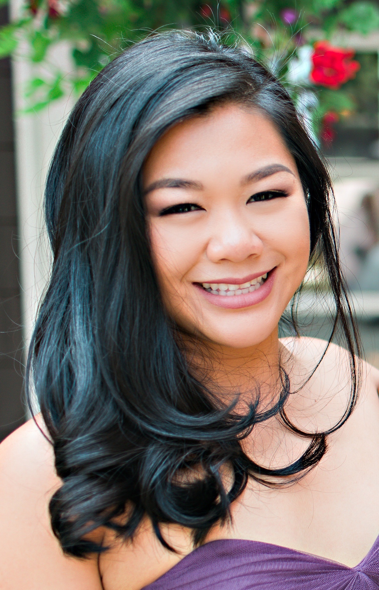

About Me
I was born to Chinese immigrants, Yip and Su, and was raised in Belize, a small Central American country neighboring Guatemala. Since I was a small child, I was taught how to speak several languages in order to communicate with those around me.
I am grateful for the childhood that I had because I was surrounded by different cultures and learned to appreciate the different walks of life that people come from. At the age of 13, my family and I relocated to Brooklyn, NY where we lived for 3 years before making Washington our home.
After working retail for 8 years, I joined the corporate world working in Sales Operations for a start up company specializing in developing telematics and software for fleet management. In my free time I enjoy being outdoors, hiking, finding every swimming hole that Washington has to offer and riding on the back of my boyfriend's Harley, granted the weather is nice. I also enjoy spending quality time with my family and friends or staying in on rainy Washington nights and watching horror movies.
The passing of my dad in the Spring of 2018 is what ultimately led me to The University of Washington Coding Bootcamp. He was my number one supporter and my rock. I wanted to live up to his wishes for me and decided to go back to school like he always pushed me to. When looking into furthering my education I stumbled upon the program and knew then and there that this is where I was meant to be. Though challenging at times, I do feel like I am one step closer to becoming a Full-Stack Web Developer with every day that goes by. Go Huskies!